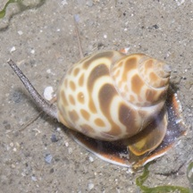
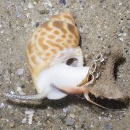
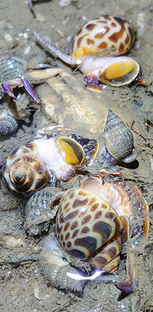
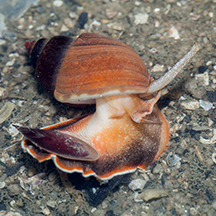
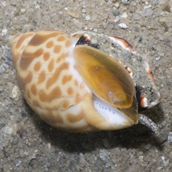
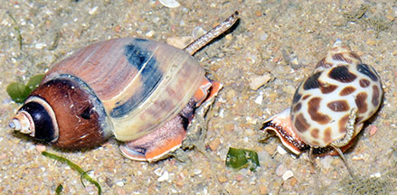
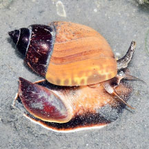
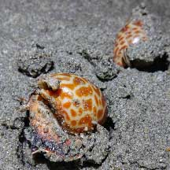

|
|
| shelled snails text index | photo index |
| Phylum Mollusca > Class Gastropoda |
| Spiral
babylonia snail Babylonia spirata Family Babyloniidae updated Jul 2020 Where seen? This pretty snail is sometimes seen on our Northern shores on sandy areas near seagrasses. Often half buried in the ground, emerging as the tide starts to come in. Features: 4-6cm. Shell thick, conical, smooth with distinctive spiral. Shell colour and pattern variable, from plain brown to white with orange or brown spots. There is notch at the tip of the shell where the long siphon emerges. Operculum thin and flexible, made of a horn-like material. Body pale, with a long muscular foot that is dark with an orange rim, short tentacles and long siphon. |
 Changi, Jun 13 |
 Muscular foot with operculum. |
 Scavenging on something dead? Changi Carpark 1, Jul 23 Photo shared by Richard Kuah on facebook. |
 Pulau Ubin OBS, Jan 16 Photo shared by Marcus Ng on facebook. |
 |
| Spiral babylonia snails on Singapore shores |
On wildsingapore
flickr
|
| Other sightings on Singapore shores |
 Pasir Ris Park, Sep 20 Photo shared by Loh Kok Sheng on facebook. |
 Pulau Ubin, Dec 17 Photo shared by Loh Kok Sheng on facebook. |
 Changi Lost Coast, Jun 22 Photo shared by Richard Kuah on facebook. |
|
References
|